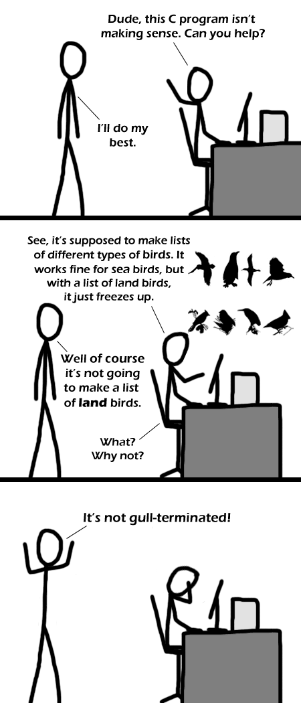

Comic JK 270
When I Feel Like It
⇤
<
?
>
⇥

⇤
<
?
>
⇥
Forum
.
RSS
.
Digg
.
Facebook
.
Reddit
.
Twitter
.
Stumbleupon
> are comments C strings really stored like this? how terrible� facehoof Yes, that's one of the reasons I refused to learn C in about 1980. Never thought people would be dumb enough to still use it 30 years later. > I would LOVE to see you write operating systems and low-level interface code in anything other than C. ^somebody's jelly� I don't get it...� >The alt text explains the comic.� Would be better without th alt text� >biology major disagrees.� I read this comic. Thought "Oh no... Must resist impact of extremely bad pun... Must survive..."� *twitch* - That guy is justified in his facepalm� >I second this.� >>me two� >>>me three� >>>>Me three, t(w)oo!� Me 4 � >>>>>>Me four, or is it 1*2*3*3^2= Me 54th? And here I was thinking it was a buildup for a "C-Birds" pun� >Same. >That's even better than the comic itself... XD� ^stop u bastards xD� worst comic ever! >Unfortunately your comment was not processed properly because it wasn't null-terminated� char c[]="How do you post in this one? It looks kinda fun actually :)" � '�' added by Qonpilator (I'm Qon) What's up with the HTML? > same question this is <% for x in range:(5)%> so <%#for ends%> lame. However, yet another reason why *python* works so good. It's the python html code...sorta like Python + PHP. The escape sequence for inserting a null character in C uses a BACKSLASH like '�', silly people. >Yes, I was wondering what people thought /0 could possibly do. THAT IS NOT A NULL!!! A �; (ASCII code 0) is NULL! � evaluates to � inside a C string, just as you can do "Hello, worldn". "And it's easier to type too.�"� Apparently, we have to escape our backslashes... Maybe he's missing an addslashes() function somewhere. or something? But that would be a security vulnerability and I doubt he'd have one that simple. hmm... #{puts "hello, world"} ${print "hello, worldn"} comments have to end like this?� Your mother is not null-terminated. ^ You *will* be.